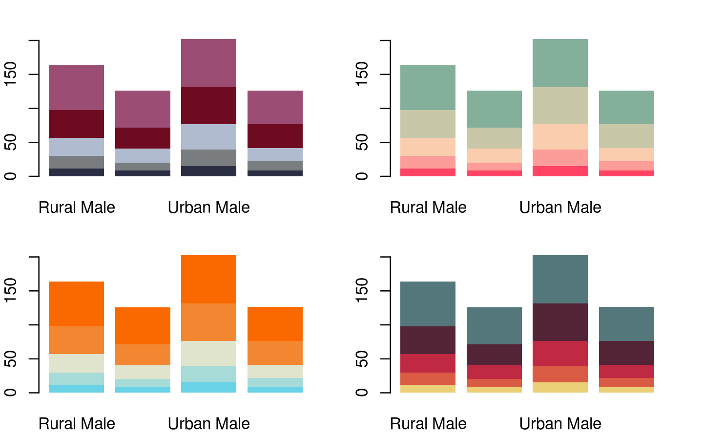
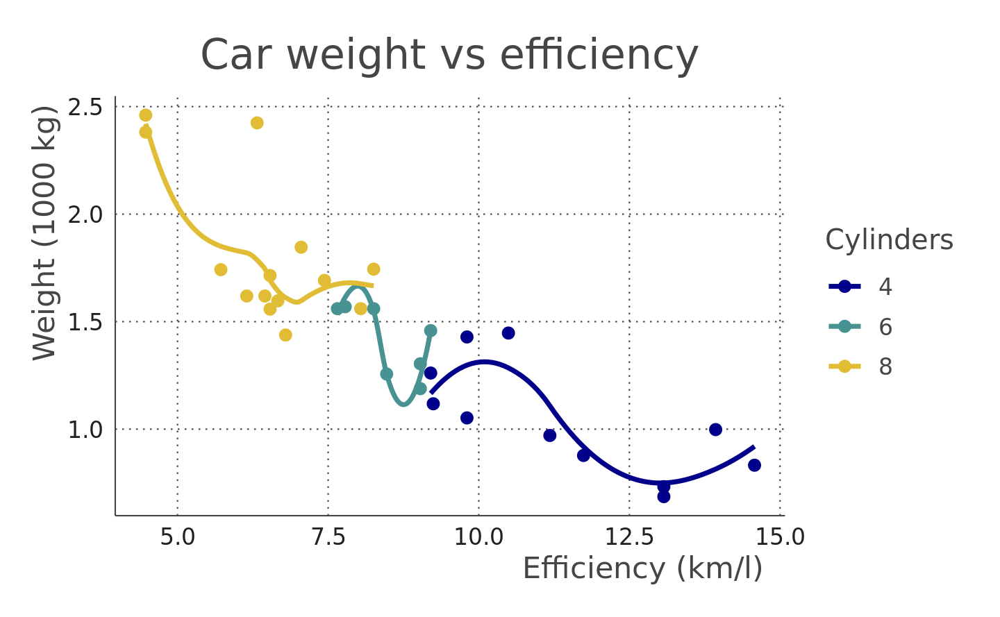

第 12 章 色彩与字体
12.1 颜色
在 R 语言中，如何表示颜色，
- 使用内置的颜色名称，如
red表示红色，green表示绿色，而blue表示蓝色，完整的颜色名称列表，见colors()或者colours()，有人整理了一张 R 内置的颜色名称和对应颜色图 https://stat.columbia.edu/~tzheng/files/Rcolor.pdf，可供参考 - 用十六进制的字符串表示颜色，如
#000000表示黑色，#FF0000表示红色，#00FF00表示绿色
如何构造颜色
rgb函数是最常用的
红(red)、绿(green)、蓝(blue)是三原色，由他们的不同配比可以构成大千世界里五光十色
函数参数说明：
red, blue, green取值范围\([0,M]\)，\(M\) 是maxColorValue默认情况下参数maxColorValue为 1names字符向量，给这组颜色值取名maxColorValue红，绿，蓝三色范围的最大值alpha是颜色的透明度
rgb 产生一种颜色，如 rgb(255, 0, 0, maxColorValue = 255) 的颜色是 "#FF0000" ，这是一串16进制数，每两个一组，那么一组有 \(16^2 = 256\) 种组合，整个一串有 \(256^3 = 16777216\) 种组合，这就是RGB表达的所有颜色，一个标准的 RGB 颜色空间，即 sRGB (IEC
standard 61966)。用色条示意，如图 12.2
# 黑色 红色 绿色 黄色 蓝色 紫色 青色 白色
rgb(expand.grid(r = c(0, 1), g = c(0, 1), b = c(0, 1)))
#> [1] "#000000" "#FF0000" "#00FF00" "#FFFF00" "#0000FF" "#FF00FF" "#00FFFF"
#> [8] "#FFFFFF"palette("default") 默认的调色板将灰色替换上述白色
图 12.1: 默认的调色板
图 12.2: 内置的彩虹系调色板
12.2 配色
调色板合集 paletteer，其收录了很多 R 包制作的调色板，其中包括 r-color-palettes 和 wesanderson，根据电影 Harry Potter 制作的调色板 harrypotter，根据网站 CARTO 设计的 rcartocolor 包
colorblindr 模拟色盲环境下的配色方案
不同的颜色模式，从 RGB 到 HCL 的基本操作 https://stat545.com/block018_colors.html
# https://github.com/hadley/ggplot2-book
library(tidyverse)
hcl <- expand.grid(x = seq(-1, 1, length = 100), y = seq(-1, 1, length=100)) %>%
tbl_df() %>%
filter(x^2 + y^2 < 1) %>%
mutate(
r = sqrt(x^2 + y^2),
c = 100 * r,
h = 180 / pi * atan2(y, x),
l = 65,
colour = hcl(h, c, l)
)
# sin(h) = y / (c / 100)
# y = sin(h) * c / 100
cols <- scales::hue_pal()(5)
selected <- colorspace::RGB(t(col2rgb(cols)) / 255) %>%
as("polarLUV") %>%
colorspace::coords() %>%
as.data.frame() %>%
mutate(
x = cos(H / 180 * pi) * C / 100,
y = sin(H / 180 * pi) * C / 100,
colour = cols
)
ggplot(hcl, aes(x, y)) +
geom_raster(aes(fill = colour)) +
scale_fill_identity() +
scale_colour_identity() +
coord_equal() +
scale_x_continuous("", breaks = NULL) +
scale_y_continuous("", breaks = NULL) +
geom_point(data = selected, size = 10, color = "white") +
geom_point(data = selected, size = 5, aes(colour = colour))图 8.3: HCL调色
R 内置了 502 种不同颜色的名称，下面随机地选取 20 种颜色
sample(colors(TRUE), 20)
#> [1] "azure4" "gray48" "palevioletred4" "gray4"
#> [5] "orangered2" "lightblue1" "mediumvioletred" "mediumorchid2"
#> [9] "orange4" "mediumorchid1" "brown4" "orangered"
#> [13] "rosybrown3" "darkorchid3" "darkred" "mediumpurple3"
#> [17] "pink2" "green" "bisque3" "gray14"R 包 grDevices 提供 hcl 调色板34 调制两个色板
# Colors from https://github.com/johannesbjork/LaCroixColoR
color_pal <- c("#FF3200", "#E9A17C", "#E9E4A6", "#1BB6AF", "#0076BB", "#172869")
n <- 16
more_colors <- (grDevices::colorRampPalette(color_pal))(n)
scales::show_col(colours = more_colors)图 12.3: 桃色至梨色的渐变
# colors in colortools from http://www.gastonsanchez.com/
fish_pal <- c(
"#69D2E7", "#6993E7", "#7E69E7", "#BD69E7",
"#E769D2", "#E76993", "#E77E69", "#E7BD69",
"#D2E769", "#93E769", "#69E77E", "#69E7BD"
)
more_colors <- (grDevices::colorRampPalette(fish_pal))(n)
scales::show_col(colours = more_colors)图 12.4: Hue-Saturation-Value (HSV) color model
rgb(red = 86, green = 180, blue = 233, maxColorValue = 255) # "#56B4E9"
#> [1] "#56B4E9"
rgb(red = 0, green = 158, blue = 115, maxColorValue = 255) # "#009E73"
#> [1] "#009E73"
rgb(red = 240, green = 228, blue = 66, maxColorValue = 255) # "#F0E442"
#> [1] "#F0E442"
rgb(red = 0, green = 114, blue = 178, maxColorValue = 255) # "#0072B2"
#> [1] "#0072B2"举例子，直方图配色与不配色
# library(pander)
# evalsOptions('graph.unify', TRUE)
# panderOptions('graph.colors') 获取调色板
# https://www.fontke.com/tool/rgbschemes/ 在线配色
cols <- c(
"#56B4E9", "#009E73", "#F0E442", "#0072B2",
"#D55E00", "#CC79A7", "#999999", "#E69F00"
)
hist(mtcars$hp, col = "#56B4E9", border = "white", grid = grid())图 12.5: 直方图
ggplot(mtcars) +
geom_histogram(aes(x = hp, fill = as.factor(..count..)),
color = "white", bins = 6
) +
scale_fill_manual(values = rep("#56B4E9", 10)) +
ggtitle("Histogram with ggplot2") +
theme_minimal() +
theme(legend.position = "none") 图 8.6: 直方图
12.2.1 colourlovers
colourlovers 包借助 XML, jsonlite 和 httr 包可以在线获取网站 COLOURlovers 的调色板
library(colourlovers)
palette1 <- clpalette('113451')
palette2 <- clpalette('92095')
palette3 <- clpalette('629637')
palette4 <- clpalette('694737')使用调色板
layout(matrix(1:4, nrow = 2))
par(mar = c(2, 2, 2, 2))
barplot(VADeaths, col = swatch(palette1)[[1]], border = NA)
barplot(VADeaths, col = swatch(palette2)[[1]], border = NA)
barplot(VADeaths, col = swatch(palette3)[[1]], border = NA)
barplot(VADeaths, col = swatch(palette4)[[1]], border = NA)
调色板的描述信息
palette1
#> Palette ID: 113451
#> Title: Anaconda
#> Created by user: kunteper
#> Date created: 2007-08-05 14:14:15
#> Views: 678
#> Votes: 2
#> Comments: 2
#> Hearts: 0
#> Rank: 0
#> URL: http://www.colourlovers.com/palette/113451/Anaconda
#> Image URL:
#> Colors: #2B2D42, #7A7D7F, #B1BBCF, #6E0B21, #9B4D73获取调色板中的颜色向量
12.3 字体
firatheme 包提供基于 fira sans 字体的 GGplot2 主题，类似的字体主题包还有 trekfont 、 fontHind， fontquiver 包与 fontBitstreamVera（Bitstream Vera 字体）、 fontLiberation（Liberation 字体）包和 fontDejaVu （DejaVu 字体）包一道提供了一些可允许使用的字体文件，这样，我们可以不依赖系统制作可重复的图形。
Thomas Lin Pedersen 开发的 systemfonts 可直接使用系统自带的字体
library(firatheme)
ggplot(mtcars, aes(x = mpg * 0.43, y = wt * 0.4535924, colour = factor(cyl))) +
geom_point(size = 2) +
geom_smooth(se = FALSE) +
labs(
title = "Car weight vs efficiency",
x = "Efficiency (km/l)",
y = "Weight (1000 kg)",
colour = "Cylinders"
) +
theme_fira() +
scale_colour_fira()
#> Scanning ttf files in /home/travis/R/Library/firatheme/font ...
#> Extracting .afm files from .ttf files...
#> /home/travis/R/Library/firatheme/font/FiraSans-Bold.ttf => /home/travis/R/Library/extrafontdb/metrics/FiraSans-Bold
#> /home/travis/R/Library/firatheme/font/FiraSans-BoldItalic.ttf => /home/travis/R/Library/extrafontdb/metrics/FiraSans-BoldItalic
#> /home/travis/R/Library/firatheme/font/FiraSans-Italic.ttf => /home/travis/R/Library/extrafontdb/metrics/FiraSans-Italic
#> /home/travis/R/Library/firatheme/font/FiraSans-Medium.ttf => /home/travis/R/Library/extrafontdb/metrics/FiraSans-Medium
#> /home/travis/R/Library/firatheme/font/FiraSans-MediumItalic.ttf => /home/travis/R/Library/extrafontdb/metrics/FiraSans-MediumItalic
#> /home/travis/R/Library/firatheme/font/FiraSans-Regular.ttf => /home/travis/R/Library/extrafontdb/metrics/FiraSans-Regular
#> Found FontName for 6 fonts.
#> Scanning afm files in /home/travis/R/Library/extrafontdb/metrics
#> Writing font table in /home/travis/R/Library/extrafontdb/fontmap/fonttable.csv
#> Writing Fontmap to /home/travis/R/Library/extrafontdb/fontmap/Fontmap...
#> `geom_smooth()` using method = 'loess' and formula 'y ~ x'
以常用的新罗马字体为例，在 R 绘图代码中全局设置字体 par(family="Times") 或者 par(family="serif")，数据集 cars 的含义，散点图 12.6 表达的统计意义
# plot(speed ~ dist, data = cars)
#
# plot(speed ~ dist, data = cars, panel.first = grid(8, 8),
# pch = 0, cex = 1.2, col = "blue", xlab = "speed", ylab = "dist"
# )
#
# plot(speed ~ dist, data = cars,
# panel.first = lines(stats::lowess(cars$speed, cars$dist), lty = "dashed"),
# pch = 0, cex = 1.2, col = "blue", xlab = "speed", ylab = "dist"
# )
plot(Ozone ~ Wind, data = airquality, pch = as.character(Month),
subset = Month != 7)图 12.6: 数学字体
pdf 设备使用 sans 字体 ArialMT + SymbolMT 字体显示，默认字体，添加代码块设置 dev.args=list(family = "sans") 图12.7
par(mar = c(4, 4, 2, 1))
x <- seq(-4, 4, len = 101)
y <- cbind(sin(x), cos(x))
matplot(x, y,
type = "l", xaxt = "n",
main = expression(paste(
plain(sin) * phi, " and ",
plain(cos) * phi
)),
ylab = expression("sin" * phi, "cos" * phi), # only 1st is taken
xlab = expression(paste("Phase Angle ", phi)),
col.main = "blue"
)
axis(1,
at = c(-pi, -pi / 2, 0, pi / 2, pi),
labels = expression(-pi, -pi / 2, 0, pi / 2, pi)
)图 12.7: 默认 sans 字体
CM <- Type1Font(
"CM",
c(file.path(
system.file("fonts", "metrics", package = "fontcm"),
c(
"fcmr8a.afm", "fcmb8a.afm", "fcmri8a.afm",
"fcmbi8a.afm", "cmsyase.afm"
)
))
)
pdfFonts(CM = CM)family 指定字体，默认字体 Helvetica
pdf("cm.pdf", family = "CM", width = 4, height = 4)
par(mar = c(4.1, 4.1, 0.5, 0.5))
x <- seq(-4, 4, len = 101)
y <- cbind(sin(x), cos(x))
matplot(x, y,
type = "l", xaxt = "n",
main = expression(paste(
plain(sin) * phi, " and ",
plain(cos) * phi
)),
ylab = expression("sin" * phi, "cos" * phi), # only 1st is taken
xlab = expression(paste("Phase Angle ", phi)),
col.main = "blue"
)
axis(1,
at = c(-pi, -pi / 2, 0, pi / 2, pi),
labels = expression(-pi, -pi / 2, 0, pi / 2, pi)
)
dev.off()Sys.setenv(R_GSCMD = "C:/Program Files/gs/gs9.26/bin/gswin64c.exe")
# embedFonts(file = "cm.pdf", outfile = "cm-embed.pdf") # GS 默认搜索路径不对
embedFonts(
file = "cm.pdf", outfile = "cm-embed.pdf",
fontpaths = system.file("fonts", package = "fontcm") # 指定字体搜索路径
)fontcm 包 (???) 实现在 Base R 图形中嵌入数学字体35，图形中嵌入重音字符36
调用系统字体，安装使用网络字体
library(showtext, quietly = TRUE)
showtext_auto()
pdf("google-fonts.pdf")
font_add_google("Alegreya Sans", "aleg")
par(family = "serif")
plot(0:5, 0:5, type = "n")
text(1:4, 1:4, "Serif", font = 1:4, cex = 2)
par(family = "fira-sans")
plot(0:5, 0:5, type = "n")
text(1:4, 1:4, "Sans", font = 1:4, cex = 2)
dev.off()knitr 支持的引擎有：
names(knitr::knit_engines$get())
#> [1] "awk" "bash" "coffee" "gawk" "groovy"
#> [6] "haskell" "lein" "mysql" "node" "octave"
#> [11] "perl" "psql" "Rscript" "ruby" "sas"
#> [16] "scala" "sed" "sh" "stata" "zsh"
#> [21] "highlight" "Rcpp" "tikz" "dot" "c"
#> [26] "fortran" "fortran95" "asy" "cat" "asis"
#> [31] "stan" "block" "block2" "js" "css"
#> [36] "sql" "go" "python" "julia" "sass"
#> [41] "scss" "theorem" "lemma" "corollary" "proposition"
#> [46] "conjecture" "definition" "example" "exercise" "proof"
#> [51] "remark" "solution"导入系统TTF类型字体到 R 环境中，这样绘图可以使用更多的字体
install.packages("extrafont")
library(extrafont)
font_import()
# 查看可用的字体
# Vector of font family names
fonts()
# Show entire table
fonttable()
# 加载字体
# Only necessary in session where you ran font_import()
loadfonts()
# For PostScript output, use loadfonts(device="postscript")
# Suppress output with loadfonts(quiet=TRUE)测试字体是否被正确调用
pdf("font_Impact.pdf", family = "Impact", width = 4, height = 4)
par(mar = c(4.1, 4.1, 2.1, 0.5))
plot(mtcars$mpg, mtcars$wt,
main = "Fuel Efficiency of 32 Cars",
xlab = "Weight (x1000 lb)",
ylab = "Miles per Gallon"
)
dev.off()PDF 格式图片转 PNG 格式

图 12.8: Impact 字体